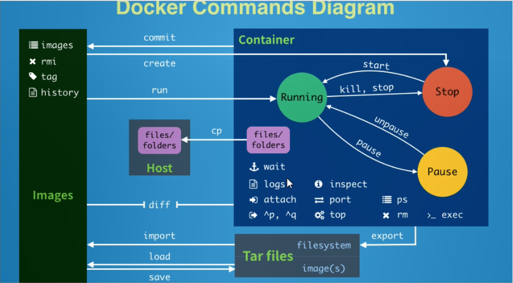

昨天学习了下docker的相关概念，今天就学习下docker的常见命令。
常用命令图

帮助命令
检查docker版本
- 基本语法
docker version
查看docker详细信息
基本语法
docker info用于查看docker详细信息,包括系统本身信息、镜像存储的目录、镜像站点的网址等等
查询相关指令使用说明
- 基本语法
docker [COMMAND] --help
镜像命令
列出本地主机上的镜像
基本语法
docker images [选项]常用选项说明
| 选项 | 描述 |
|---|---|
| -a | 列出本地所有的镜像(含中间镜像层) |
| -q | 只显示镜像ID |
| –digest | 显示镜像的摘要信息 |
| –no-trunc | 显示完整的镜像信息 |
- 结果标题说明
| 标题 | 描述 |
|---|---|
| REPOSITORY | 镜像的仓库源 |
| TAG | 镜像的标签 |
| IAMGE ID | 镜像的ID |
| CREATED | 镜像创建时间 |
| SIZE | 镜像大小 |
备注：同一个仓库源可以有多个TAG，代表这个仓库源的不同版本，我们使用REPOSITORY：TAG来定义不同的镜像。如果不指定一个镜像的版本标签，例如你只是用mysql,docker默认将使用mysql:latest镜像。
根据名字搜索镜像信息
基本语法
docker search [OPTIONS] 镜像名字常用选项说明
| 选项 | 描述 |
|---|---|
| –limit | 指定查询的最大记录数，默认是25 |
| –filter | 用于过来出满足条件的镜像信息，如–filter=stars=3，用于查询收藏数不小于3的镜像 |
| –no-trunc | 显示完整的镜像信息 |
下载镜像
基本语法
docker pull 镜像名字:[TAG]备注：如果省略TAG，则默认为latest。
删除一个或多个镜像
- 基本语法
docker rmi [OPTIONS] IMAGE [IMAGE...]
提示，可以使用docker rmi -f $(docker images -qa)形式删除全部镜像。
- 常用选项说明
| 选项 | 描述 |
|---|---|
| -f | 强制删除，即使当镜像有相对应的容器在运行，也能删除 |
容器命令
新建并启动容器
- 基本语法
docker run [OPTIONS] IMAGE [COMMAND] [arg...] - 常用选项说明
| 选项 | 描述 |
|---|---|
| –name=”容器新名字” | 为容器指定一个名称 |
| -d | 后台运行容器，并返回容器ID，也即启动守护式容器 |
| -i | 以交互模式运行容器，通常和-t同时使用 |
| -t | 为容器重新分配一个伪输入终端，通常与-i同时使用 |
| -P | 随机端口映射 |
| -p | 指定端口映射，有四种格式，看下表 |
- 端口映射的四种格式
| 格式 |
|---|
| ip:hostPort:containerPort |
| ip:containerPort |
| hostPort:containerPort |
| containerPort |
- 示例
1 | # 使用镜像centos:latest以交互模式启动一个容器，在容器中执行/bin/bash命令 |
备注：启动守护式容器,docker容器后台运行，必须有一个前台进程；容器运行的命令如果不是那些一直挂起的命令(比如运行top、tail)，就会自动退出。
列出当前正在运行的容器
基本语法
docker ps [OPTIONS]常用选项说明
| 选项 | 描述 |
|---|---|
| -a | 列出当前所有正在运行的容器+历史上运行过的容器 |
| -l | 显示最近创建的容器 |
| -n | 显示最近n个创建的容器 |
| -q | 静默模式，只显示容器编号 |
| –no-trunc | 不截断输出 |
- 示例
1 |
|
退出容器
- 基本语法
exit容器停止退出- 快捷键
ctrl+P+Q容器不停止退出
启动容器
- 基本语法
docker start 容器ID或者容器名
重启容器
- 基本语法
docker restart 容器ID或者容器名
停止容器
- 基本语法
docker stop 容器ID或者容器名
强制停止容器
- 基本语法
docker kill 容器ID或者容器名
删除已停止的容器
基本语法
docker rm [OPTIONS] 容器ID或者容器名常用选项说明
| 选项 | 描述 |
|---|---|
| -f | 强制删除，即使当镜像有相对应的容器在运行，也能删除 |
- 示例
1 | # 删除所有容器信息 |
查看容器日志
- 基本语法
docker logs [选项] 容器ID - 常用选项说明
| 选项 | 描述 |
|---|---|
| -t | 加入时间戳 |
| -f | 跟随最新的日志打印 |
| –tail 数字 | 显示最后多少条日志 |
查看容器内部运行的进程
- 基本语法
docker top 容器ID
查看容器内部细节
- 基本语法
docker inpsect 容器ID
该命令相当于查看容器本身的各种属性,内容以json串的形式返回。
进入正在运行的容器并以命令行交互
- 基本语法
1）docker exec -it 容器ID bashshell
2)docker attach 容器ID
命令变体使用:
docker exec -t 容器名 命令,是直接在容器中执行ls -l /tmp，但不需要返回容器中的伪终端
相当于在宿主机中直接执行了容器中的命令，如docker exec -t **** ls -l /tmp;docker exec -t 容器ID /bin/bash相当于docker exec -it 容器ID;
- 上述命令的区别
1）attach直接进入容器启动命令的终端，不会启动新的进程,所以如果启动命令阻塞比较严重的时候，所有attach的终端都会同时阻塞
而且启动命令如果有打印的时候，所有attach的终端都会同时打印。
2）exec是在容器中打开新的终端，并且可以启动新的进程
容器内与主机文件拷贝
基本语法
1)docker cp 容器ID:容器内路径 目的主机路径从容器内拷贝文件到主机上
2)
docker cp 主机需要copy文件路径 容器ID:容器内路径从主机上拷贝文件到容器内